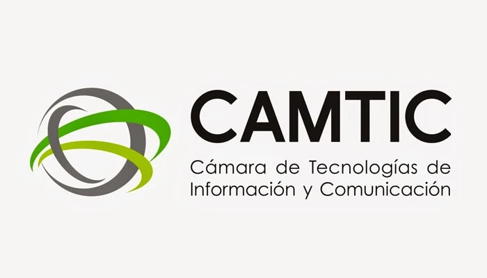
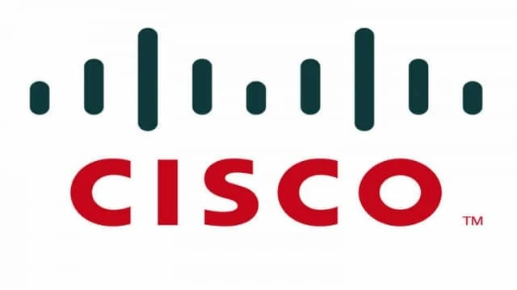
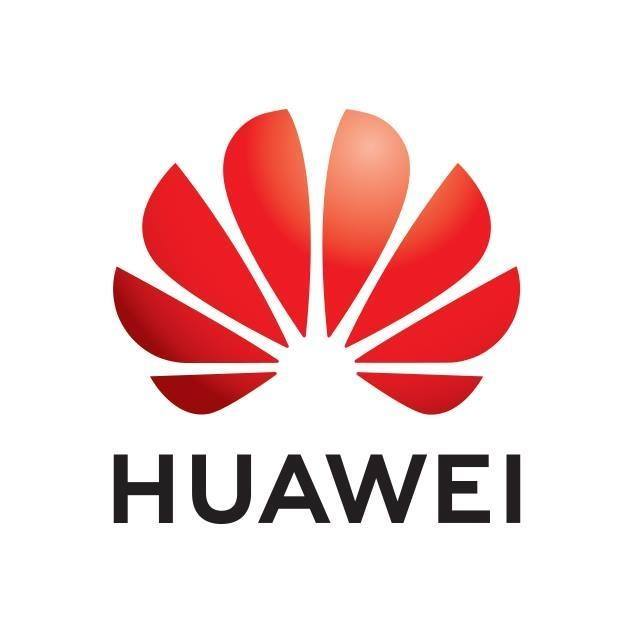
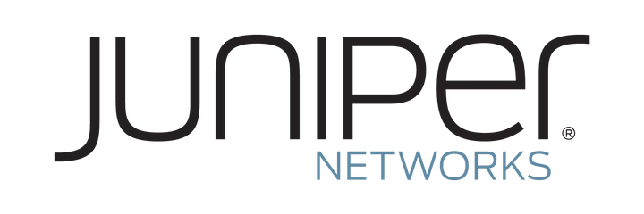

Tecnología empresarial
Tecnología empresarial que mantiene su operación en marcha
Administramos, monitoreamos y fortalecemos redes, infraestructura y servicios críticos para empresas que necesitan continuidad, seguridad y soporte confiable.
Panel de monitoreo
Monitoreo activo de infraestructura
- Redes y conectividad
- Servidores y servicios críticos
- Seguridad y continuidad
- Soporte preventivo y correctivo
Estado operativo: supervisión continua
Problemas que resolvemos
Cuando la tecnología falla, la operación se detiene
Community Networks CR ayuda a prevenir, administrar y optimizar estos puntos antes de que afecten el negocio.
- Caídas de red frecuentes.
- Lentitud en sistemas internos.
- Falta de monitoreo preventivo.
- Soporte reactivo y desordenado.
- Infraestructura sin planificación.
- Riesgos de seguridad y continuidad.
Áreas de servicio
Servicios guiados por objetivo operativo
Explore cada categoría para identificar la solución que su operación necesita hoy.
Administración de redes
Gestión y monitoreo para mantener operación estable y segura.
Diseño de redes empresariales
Arquitecturas LAN y WAN ajustadas al crecimiento real del negocio.
Monitoreo de conectividad 24/7
Visibilidad operativa para detectar y corregir incidentes a tiempo.
Mesa de ayuda especializada
Atención técnica para usuarios y áreas críticas de la operación.
Mantenimiento preventivo
Intervenciones planificadas para disminuir fallas y tiempos muertos.
Mantenimiento correctivo
Respuesta técnica rápida para restablecer servicios críticos.
Consultoría de proyectos tecnológicos
Planificación, ejecución y seguimiento técnico para proyectos de infraestructura.
Dirección Estratégica de Tecnología
Liderazgo ejecutivo TI para alinear operación, riesgos y evolución digital.
Administración de contratos TI
Seguimiento de proveedores, servicios y acuerdos de nivel de servicio.
Servicios ITIL y gestión de SLA
Gestión de incidentes y niveles de servicio con enfoque operativo.
Evaluación de riesgos operativos
Identificación de brechas para prevenir interrupciones del negocio.
Continuidad y recuperación
Estrategias para mantener o restaurar servicios ante eventos críticos.
¿No sabe por dónde empezar? Solicite una evaluación inicial.
Solicitar evaluaciónServicio Estratégico
Dirección Estratégica de Tecnología (Outsourced CIO / IT Director)
Servicio orientado a empresas que requieren liderazgo tecnológico estratégico sin necesidad de contar internamente con un CIO o Director de TI a tiempo completo.
Ver enfoque completo del servicio
En Community Networks CR actuamos como aliados tecnológicos de la organización, ayudando a alinear la infraestructura, la operación y la evolución tecnológica con los objetivos del negocio, garantizando continuidad operativa, estabilidad, seguridad y capacidad de crecimiento.
Este servicio integra acompañamiento ejecutivo, criterio técnico y supervisión estratégica sobre áreas clave como infraestructura tecnológica, telecomunicaciones, cloud, ciberseguridad, soporte TI, continuidad operativa y gestión de proveedores.
Nuestro enfoque permite a las empresas tomar decisiones tecnológicas con mayor claridad, control y proyección, reduciendo riesgos operativos y fortaleciendo la capacidad tecnológica de la organización.
Alcance del servicio
- Planificación y estrategia tecnológica.
- Acompañamiento ejecutivo para toma de decisiones tecnológicas.
- Gobierno tecnológico y mejores prácticas.
- Supervisión y evolución de infraestructura TI.
- Evaluación de riesgos y continuidad operativa.
- Seguimiento operativo y consultivo continuo.
- Gestión y acompañamiento de proveedores tecnológicos.
- Optimización de costos y recursos TI.
- Apoyo en proyectos de transformación digital.
- Coordinación estratégica de servicios cloud y ciberseguridad.
Cómo trabajamos
Proceso claro para continuidad tecnológica
-
01
Diagnóstico inicial
Revisamos el estado actual de su infraestructura y la criticidad de su operación.
-
02
Propuesta técnica
Definimos prioridades, riesgos y oportunidades de mejora con un plan accionable.
-
03
Implementación o administración
Ejecutamos la solución o asumimos la gestión operativa de los servicios acordados.
-
04
Seguimiento continuo
Monitoreamos, documentamos y acompañamos la evolución tecnológica de la empresa.
Ecosistema de alianzas
Integración multivendor con criterio consultivo
Community Networks CR integra Huawei Cloud junto con otras plataformas líderes para recomendar la opción más conveniente según cada proyecto.
- 01 Evaluación técnica y consultiva sin sesgo de marca.
- 02 Selección de plataforma según objetivos del proyecto.
- 03 Integración de nube, infraestructura y ciberseguridad.
- 04 Servicios administrados para operar y crecer con control.
Alianzas y fabricantes
Ecosistema de soluciones estratégicas
Huawei Cloud
Plataforma clave para proyectos de nube, continuidad operativa y modernización.
Amazon Web Services (AWS)
Servicios cloud para arquitectura flexible, analítica y cargas escalables.
Microsoft
Integración de soluciones empresariales y productividad con enfoque operativo.
Cisco
Infraestructura de red y seguridad para entornos empresariales de alta demanda.
Honeywell
Tecnología especializada para operaciones, monitoreo y entornos industriales.
Arquitecturas híbridas
Combinamos múltiples plataformas para responder a necesidades reales del negocio.
Community Networks CR recomienda e integra la tecnología más conveniente para cada proyecto.
Instituciones
Afiliaciones
Afiliación
Promotora del Comercio Exterior de Costa Rica
Participación en ecosistemas empresariales orientados a competitividad y desarrollo.

Afiliación
Cámara de Tecnologías de Información y Comunicación
Vinculación con actores de la industria para impulsar innovación tecnológica local.
Capacidades tecnológicas
Alianzas y Tecnologías
Respaldados por alianzas estratégicas, fabricantes y estándares de la industria.

Cisco
Especialización para diseño, operación y soporte de redes empresariales.

Huawei Cloud
Capacidad para proyectos cloud con enfoque en continuidad operativa y modernización.

Juniper Networks
Capacidad técnica para infraestructuras de alto desempeño y disponibilidad.
ITIL
Buenas prácticas para gestión de servicios, incidentes y niveles de servicio.
Contáctenos
Déjenos su consulta y con gusto le atenderemos
Cuéntenos qué necesita y le orientamos con una solución adecuada.
San José, Costa Rica
506-7115-8296
info@communitynetworkscr.com